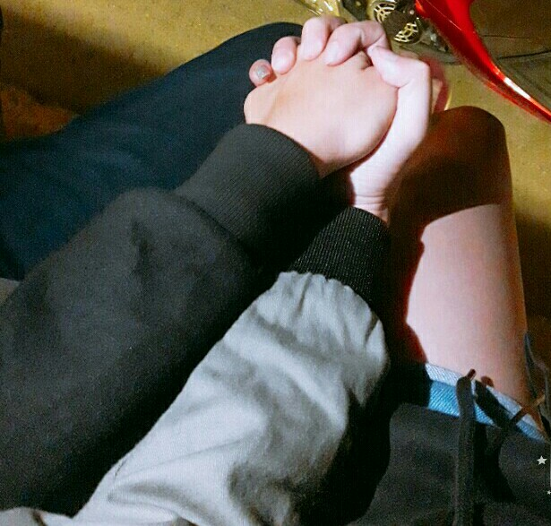

- Lời mở đầu
- Chương 1: Cuộc gọi định mệnh
- Chương 2: Lộ diện
- Chương 3: Hạnh phúc
- Chương 4: Cạnh tranh
Đây là bản chưa hoàn chỉnh mang tính chất tham khảo.
Nội dung câu chuyện xoay quanh cuộc tình giữa hai phái Côn Lôn và Đường Môn. Một cuộc tình bị ngăn cản giữa các thế lực khác, trải qua đầy sóng gió, gian truân.
Đây là câu chuyện có thật, pha chút hư cấu sẽ đưa đọc giả đến nhiều cung bậc cảm xúc.
Lưu ý:
Vào thời buổi loạn lạc, các bang các phái giang hồ nổi lên rầm rộ, tranh giành nhau ngôi vị võ lâm minh chủ.
Gò Vấp là một vùng quê yên bình, hẻo lánh nhưng có khu rừng đầy những thú vui, vật lạ. Khu rừng đã thu hút nhiều nhân sĩ giang hồ đến khám phá. Tôi, một chàng trai nghèo đã ngoài 20, sống ẩn mình quanh năm suốt tháng tại vùng đất này. Ngày qua ngày, cứ lầm lũi đi làm, làm thì nhiều mà không đủ ăn, không đủ mặc.
Vào một buổi tối xa xưa, một vị nhân sĩ giang hồ lỡ bước nên ở nhà tôi ngủ nhờ. Người đó thấy tôi hiền nên đã dạy tôi một vài môn võ để phòng thân. Từ đấy, tôi đã là gia nhập phái Đường Môn.
Tư chất tôi thông minh nên tu vi ngày càng tiến bộ. Bang "Hoàng Đạo" từ lúc mới hình thành đã có mặt tôi. Dưới sự chỉ huy của bang chủ Linh tỷ tỷ và các trưỡng lão khác, bang đã có chỗ đứng trong giang hồ.
Vào một ngày đẹp trời, khi tham gia hoạt động, tôi đã nghe thấy nhiều giọng ca của thành viên trong bang, những lời mời, lời kêu gọi thế giới tuyển thành viên vào bang, cùng bang phát triển.
Trong bang có 2 cô bé hay nói, hay hát là Duyên Duyên phái Côn Lôn và Tiểu Vy phái Đào Hoa. Mỗi cô gái đều có ưu nhược riêng. Giọng của Tiểu Vy thì ngây ngô, trong sáng. Giọng của Duyên Duyên thì trưởng thành và đầy nội tâm. Kẻ tám lạng, người nửa cân.
Trong bang đang có một chức vị Bối Bối đang để trống, bang mở cuộc bầu chọn bỏ phiếu dành cho hai cô gái.
Sau vài ngày bỏ phiếu, số phiếu hai người đang ngang nhau. Tôi ít lên tiếng nhưng cũng khá nhiều chuyện. Duyên là người trưởng thành nhưng lại có tư tưởng bỏ học. Ngày nào cũng tâm sự bỏ học nên tôi đã quyết định bầu cho Tiểu Vy và chê trách Duyên Duyên hát dở, để Duyên chú tâm học hành.
Thua trong cuộc bầu chọn, Duyên đã uất ức, không hát nữa, làm cho phong trào của bang đi xuống. Linh tỷ tỷ đã ra mặt, trách phạt tôi, bắt tôi xin lỗi Duyên. Nếu tôi không xin lỗi thì ép tôi rời bang. Tôi cảm thấy khó chịu nhưng vì bang nên ngỏ lời xin lỗi.
Sau bao nhiêu năm ẩn mình, tôi đã bắt đầu trò chuyện cùng người lạ. Lời xin lỗi ấy là thứ bắt đầu cho cuộc tình sau này.
Duyên Duyên, một cô gái tuổi chưa 18, sống tại núi Long An, bôn tẩu giang hồ đã lâu nhưng lực chiến còn rất yếu.
Tôi muốn chấm dứt mối quan hệ này, tôi sợ yêu, sợ một lần nữa lại đổ vỡ. Nhưng lại không đủ can đảm làm điều đó. Con tim tôi đã rung động rồi.
Nhiều lần Duyên muốn nghe tôi nói, muốn thấy hình ảnh tôi nhưng tôi từ chối.
Vào đúng ngày 11-04-2018, tôi đã gọi điện và gửi lời chúc sinh nhật đến cô gái. Cô gái cười trong vui sướng. Lúc đó, tôi có thể cảm nhận niềm vui của cô ấy lớn thế nào.
Vì là ngày sinh nhật và cũng từ rất lâu cô ấy gạ tôi nói mà thất bại nên bây giờ bắt tôi hát lại vài chục bài để trả thù.
Nỗi sợ, ký ức của quá khứ bắt đầu ùa về. Niếm vui, nụ cười, hạnh phúc cũng tăng lên. Hạnh phúc sẽ chiến thắng hay quá khứ áp đảo ?
Tôi tranh thủ chụp lén khi cô ấy cười. Nụ cười làm tôi thay đổi rất nhiều.
Ngày ngày trò chuyện cùng nhau, gọi video để thấy nhau, bạn hát, tôi nghe. Tôi vừa làm việc vừa nghe. Đồng môn quanh tôi còn cười đùa, trêu ghẹo. Cảm giác lúc đó, tôi như người lạc vào mê hồn trận vậy, bỏ ngoài tai những lời nói đùa, chỉ quan tâm đến giọng nói, giọng ca và khuôn mặt ngây thơ ấy.
Sau chuỗi ngày trò chuyện, chúng tôi cũng đã tìm đến nhau. Theo trí nhớ hay quên của tôi thì đó là ngày 22-04-2018, hẹn gặp nhau ở đại lộ ngã tư An Sương. Duyên mặc quần đen, ba lô đen, cái áo màu gì thì quên cmnr. Lúc tôi xuất hiện trước cô ấy, cô ấy còn nói tôi ngầu cơ.
Nghỉ ngơi một tí, chúng tôi tìm đến tửu quán E-Mart để xem phim và ăn.
Cô ấy nhìn thì trưởng thành nhưng nhát vô cùng. Bộ phim chúng tôi xem cùng nhau là "Vùng đất câm lặng". Đây là bộ phim kinh dị, mỗi lần đến khúc kinh dị thì cô ấy che mắt lại, cô ấy còn nói sẽ che mắt lại đến hết phim =)) ... Xem phim kinh dị gì mà kỳ ghê. Còn khóc nữa chứ =))
Sau khi xem xong, chúng tôi cảm thấy đói và bắt đầu đi ăn, cả 2 đều gọi gà rán. Cô ấy lại không thích ăn cay, ăn có tí lại bỏ dở. Tôi kì kèo lắm cũng ráng ăn được một nửa nhưng cũng bỏ :(
Ăn xong thì lấy ngựa Vison chở cô ấy về nhà. Lúc ở trong tửu quán E-Mart, ba lô của Duyên đã bị tiểu nhị buộc dây lại, cô ấy loay hoay mở quài mà không được. Tôi cố gắng mở, trong lúc mở có bị xước tay.
Cô ấy thấy và hỏi tôi có sao không, lúc đó tôi rất đau nhưng tôi lại nói không sao. Vì đã rất lâu, tôi đã sống một mình, có đau đến mấy tôi cũng chịu được.
Duyên muốn uống trà sữa, muốn uống 2 ly. Lúc đó tôi kinh ngạc với niềm đam mê trà sữa to lớn như vậy. Tôi cũng ráng chiều theo. Nhưng vì trên đường về uống không hết tôi đã chửi một tăng ròi. =))
Núi Long An trùng trùng điệp điệp, trời thì tối mà nhà cô ấy ở đâu thì éo biết, éo nhớ. Tôi đã phải nhờ đến chị Google khá nhiều mới biết con đường lên núi đó.
Về chưa đến nhà còn ghé vào tiệm sửa mắt kính để thay cái tròng hay cái gọng gì đó quên bà nó rồi. Lúc đó tôi ở ngoài canh xe nên không biết sự việc bên trong.
Lần đầu gặp nhau, chở nhau đi chơi, chở nhau về. Đường đi không biết mà đường về cũng không.
Trời thì tối, hẻm thì quá trời nhiều, đường thì xấu, xe thì đông, bụi thì mù mịt. Một người dám chỉ một người dám đi.
Hai người đã gặp nhau, sở thích, tính cách bắt đầu lộ rõ...
Sau lần đầu gặp mặt, tôi nhận ra rằng là tôi đã thích cô ấy rồi.
Tôi đã mất vài ngày để hỏi tiền bối gu gồ về con đường lên núi Long An. Tôi biết yêu xa là tôi sẽ phải cố gắng rất nhiều để mọi thứ tốt nhất có thể. Ngày 28-04-2018, chúng tôi có cuộc hẹn lúc 17h, tôi đã tranh thủ đi lúc 13h, lý thuyết là một chuyện, thực hành lại là chuyện khác, tôi đã vạch ra rất nhiều cung đường nhưng gu gồ đâu phải cái gì cũng biết, tôi đã đi sai rất nhiều lần nhưng cuối cùng cũng đến được con đường tôi đã đi lần đâu.
Cái khó ở đây là hẻm nào dẫn đến nhà ẻm, lần đầu đi thì vào buổi tối nên chả nhớ hẻm nào ra hẻm nào, quẹo tùm lum hẻm, sai tùm lum nên tôi đã quyết định gọi hỏi cô áy.
Sau nhiều lần suy nghĩ nên đi đâu, cô ấy quyết định đi Phú Sinh. Đường đi cũng không biết, lại nhờ bác gu gồ chỉ điểm nữa.
Loanh quanh một hồi thì chúng tôi cũng đã đến nơi.
Phú Sinh là một nơi nhiều danh lam thắng cảnh nổi tiếng, thiết kế đơn giản, không cầu kỳ nhưng tôi lại thấy vui vì được ở bên cô ấy.
Tay trong tay, cố gắng cùng nhau, cố gắng bên nhau
Trên con đường về , chúng tôi đã có kỉ niệm với nhau
Nụ hôn đầu tiên ở một con đường vắng vẻ, tối thui, rất ít người qua lại.
Tuy rất ngắn nhưng cả hai đều ngượng ngùng.
Một cô gái mới lớn còn khờ dại, còn ngây thơ, đến hôn nhau còn sợ người ta thấy, rất e dè, nhút nhát nhưng lại là một cô gái lém lỉnh, không phải dạng vừa đâu (chương sau sẽ rõ)
Với tôi, một cảm giác sau ngần ấy năm giam mình, tôi lại được sống, tràn đầy hạnh phúc.
Nếu lúc trước, mỗi lần ngủ tôi đều mơ về quá khứ, sống trong quá khứ thì nay tôi đã mơ thấy tương lai và cố gắng thực hiện chúng.
Không phải tình yêu nào cũng hoàn hảo, quan trọng là chúng ta có vì nhau mà cố gắng không.
Giai đoạn 1: Trái tim bạn bắt đầu loạn nhịp
Giai đoạn 2: Cả hai dính nhau như hình với bóng
Giai đoạn 3: Sự khác biệt ngày càng lớn dần
Giai đoạn 4: Chúng ta là một nửa của nhau
Giai đoạn 5: Mình cưới nhau đi thôi!
Đa số các mối quan hệ kết thúc đều đã đến giai đoạn 3.
Cuộc tình chúng ta cũng vậy. Nhưng hi vọng nó sẽ tiếp tục chứ không phải kết thúc ở đây.
Vượt qua được giai đoạn này, mọi thứ sẽ dễ dàng hơn nhiều.
Đừng để cô đơn làm ta lạc lối.